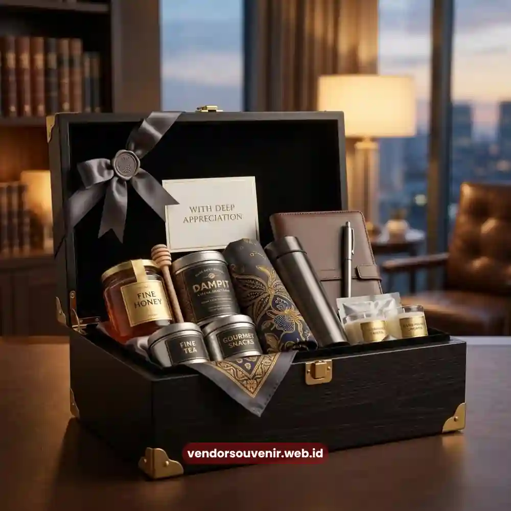

Daftar Isi
Souvenir untuk klien di momen hari jadi perusahaan adalah hadiah korporat yang diberikan sebagai bentuk terima kasih sekaligus strategi menjaga hubungan bisnis jangka panjang dengan pihak eksternal.
Berbeda dengan souvenir internal, produk untuk klien umumnya dirancang lebih eksklusif dengan kemasan premium yang mencerminkan penghargaan tinggi perusahaan terhadap mitra bisnisnya.
- Souvenir klien berfungsi sebagai strategi relationship management jangka panjang.
- Kemasan premium menjadi elemen penting yang membedakan dari souvenir internal.
- Personalisasi nama klien meningkatkan kesan eksklusif dan personal.
- Pemilihan produk sebaiknya mempertimbangkan level dan durasi kerja sama bisnis.
- Vendor Souvenir menyediakan layanan custom untuk kebutuhan hadiah relasi bisnis.
Mengapa Souvenir untuk Klien Penting Saat Perusahaan Merayakan Hari Jadi?
Souvenir untuk klien memiliki peran strategis karena menjadi salah satu bentuk komunikasi non-verbal yang memperkuat hubungan bisnis di luar transaksi formal.
Pada momen hari jadi perusahaan, pemberian souvenir kepada klien menunjukkan bahwa perusahaan menghargai kepercayaan dan kerja sama yang telah terjalin selama ini.
Dari perspektif bisnis, hubungan yang dijaga dengan baik melalui perhatian semacam ini cenderung menghasilkan loyalitas klien yang lebih tinggi dibandingkan hubungan yang hanya berdasarkan transaksi semata.
Klien yang merasa dihargai secara personal lebih cenderung mempertahankan kerja sama jangka panjang dan merekomendasikan perusahaan kepada relasi bisnis lainnya.
Selain itu, momen anniversary perusahaan juga menjadi kesempatan alami untuk kembali menegaskan positioning brand di mata klien tanpa terkesan sebagai aktivitas penjualan langsung, karena konteks pemberian souvenir bersifat seremonial dan apresiatif.
Apa Perbedaan Souvenir untuk Klien Dibandingkan Souvenir Internal?
Perbedaan utama souvenir untuk klien dibandingkan souvenir internal terletak pada tingkat eksklusivitas material, kemasan, dan personalisasi produk.
Souvenir klien umumnya menggunakan material premium seperti kulit asli, kayu solid, atau logam berlapis, sementara souvenir internal lebih berfokus pada aspek fungsional dan efisiensi produksi massal.
Dari sisi kemasan, souvenir untuk klien biasanya menggunakan box custom dengan finishing rapi, dilengkapi kartu ucapan formal dari manajemen perusahaan.
Kemasan semacam ini penting untuk menciptakan pengalaman unboxing yang berkesan, mengingat klien sering kali menjadi representasi citra profesional perusahaan di mata publik yang lebih luas.
Bagaimana Menentukan Level Souvenir Berdasarkan Tingkat Kerja Sama Klien?
Penentuan level souvenir berdasarkan tingkat kerja sama klien dilakukan dengan mengelompokkan klien ke dalam beberapa segmen, misalnya klien baru, klien reguler, dan klien strategis jangka panjang.
Setiap segmen dapat menerima kategori produk yang berbeda sesuai dengan kontribusi dan durasi hubungan bisnis yang telah terjalin.
Klien strategis dengan durasi kerja sama panjang umumnya menerima produk dengan tingkat personalisasi lebih tinggi, seperti ukiran nama atau plakat penghargaan khusus, sementara klien baru dapat menerima produk pengenalan brand yang tetap berkualitas namun dengan skala personalisasi lebih sederhana.

Pilihan Hampers Korporat Premium untuk Relasi Bisnis
Bagaimana Souvenir Dapat Memperkuat Hubungan Bisnis Jangka Panjang?
Souvenir dapat memperkuat hubungan bisnis jangka panjang dengan menciptakan momen positif yang diasosiasikan langsung dengan brand perusahaan pemberi.
Setiap kali klien menggunakan atau melihat produk tersebut, terjadi proses brand recall yang secara konsisten mengingatkan mereka pada relasi bisnis yang sedang berjalan.
Selain aspek brand recall, souvenir yang diberikan secara konsisten pada momen-momen penting turut membangun pola komunikasi positif antara perusahaan dan klien.
Pola ini pada akhirnya menciptakan fondasi kepercayaan yang lebih kuat dibandingkan hubungan bisnis yang hanya mengandalkan komunikasi formal semata.
Elemen Apa yang Wajib Diperhatikan pada Souvenir untuk Klien?
Elemen yang wajib diperhatikan pada souvenir untuk klien meliputi kualitas material, kerapian kemasan, ketepatan waktu pengiriman, serta kesesuaian desain dengan citra profesional kedua belah pihak.
Keempat elemen ini saling berkaitan dalam membentuk persepsi keseluruhan terhadap penghargaan yang diberikan perusahaan.
Ketepatan waktu pengiriman menjadi elemen yang sering kali kurang diperhatikan, padahal keterlambatan pengiriman souvenir pada momen seremonial dapat mengurangi makna dari hadiah itu sendiri.
Oleh karena itu, perencanaan waktu produksi dan distribusi perlu dilakukan jauh sebelum tanggal perayaan berlangsung.
Percayakan Souvenir Klien Anda kepada Vendor Souvenir
Vendor Souvenir memahami bahwa hubungan dengan klien dan mitra bisnis merupakan aset berharga yang perlu dijaga secara berkelanjutan.
Kami menyediakan berbagai pilihan souvenir eksklusif dengan material premium, kemasan presentatif, serta personalisasi sesuai level relasi bisnis Anda, mulai dari klien baru hingga mitra strategis jangka panjang.
Jadikan momen hari jadi perusahaan Anda sebagai kesempatan memperkuat hubungan bisnis melalui souvenir berkualitas dari Vendor Souvenir.
Hubungi tim kami sekarang untuk konsultasi produk dan jadwal produksi yang sesuai kebutuhan Anda.
Souvenir untuk klien di momen hari jadi perusahaan berperan sebagai strategi relationship management yang memperkuat kepercayaan dan loyalitas bisnis jangka panjang.
Pemilihan material premium, kemasan presentatif, serta personalisasi sesuai level kerja sama menjadi faktor penentu keberhasilan strategi ini.

Pilihan Souvenir Perusahaan dari Vendor Terpercaya
Ingin Hadiah Eksklusif untuk Klien Anda?
Dapatkan produk premium dengan custom logo dan kemasan elegan yang siap mengesankan mitra bisnis terbaik Anda.
Konsultasikan kebutuhan corporate gift Anda sekarang juga.
Garansi kualitas dan ketepatan waktu pengiriman!
Maroon Souvenir
Partner Corporate Gift terpercaya di Indonesia. Berpengalaman melayani ratusan perusahaan sejak 2018.
Lihat Portofolio Kami